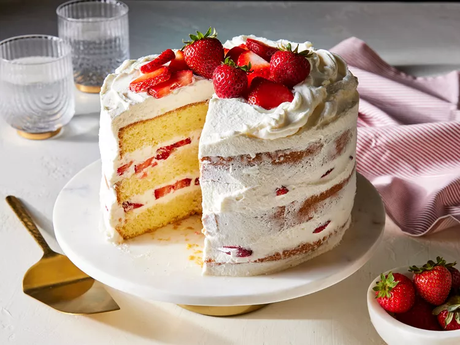

Japanese Christmas Cake

Description:
This traditional Japanese Christmas cake recipe is a favorite of cookbook author, recipe developer, and
Allrecipes Allstar Lisa Childs, who makes it every year for the holidays. It’s a super-light, delicious
sponge cake layered with fresh whipped cream and strawberries.
Ingredients:
- 6 large eggs, separated and at room temperature
- 22 tablespoons white sugar, divided
- 1/4 teaspoon salt
- 1 1/2 cups cake flour, sifted
- 2 tablespoons avocado or grapeseed oil
- 2 tablespoons whole milk
- 1/2 cup water
- 3 tablespoons orange liqueur, such as Grand Marnier®
- 3 cups whipping cream
- 1/2 to 3/4 cup powdered sugar
- 1 tablespoon vanilla extract
- 1 pound fresh strawberries, sliced (3 cups)
Steps:
-
Preheat oven to 320 degrees F (160 degrees C). Lightly grease an 8-inch cake pan; line with parchment paper. Parchment should extend 1 to 2 inches above edge of pan.
-
Mix egg yolks and 10 tablespoon white sugar in a large bowl with an electric mixer on high until mixture is pale and thick, 2 to 3 minutes. Wash and dry beaters.
-
Mix egg whites and 6 tablespoon white sugar in a medium bowl with an electric mixer on high until medium-stiff peaks form (tips curl). Mixture should be glossy and extremely fluffy.
-
Gently fold about one-third of egg white mixture into egg yolk mixture. Add the remaining two-thirds egg white mixture; gently fold in, taking care not to deflate batter, until fully incorporated, about 30 folds.
-
Stir together salt and flour in a medium bowl. Sift half of flour mixture into batter; fold until just combined. Add remaining flour mixture; fold until well combined, about 40 folds.
-
Stir together oil and milk in a small bowl; microwave on High about 30 seconds. Pour into batter; fold until well combined, about 30 folds. Batter should still be airy.
-
Pour batter into prepared pan. Gently tap pan on countertop to remove any air bubbles.
-
Bake in the preheated oven until top is golden brown and an instant-read thermometer inserted in center registers at least 190 degrees F (88 degrees C), 40 to 45 minutes. Invert onto a wire rack; let cool.
-
Meanwhile, for simple syrup, combine hot water, liqueur, and remaining 6 tablespoons white sugar in a small bowl, stirring until sugar is dissolved. Let cool.
-
Pulse whipping cream, powdered sugar, and vanilla in a food processor until stiff peaks form, 45 seconds.
-
To assemble cake, slice cooled cake horizontally into 3 equal (1-inch) layers. Brush simple syrup evenly over each portion, using all of it. Put one cake portion on a cake plate or serving tray.
-
Spread about 3/4 cup whipped cream on plated cake layer. Arrange 1/3 of strawberries over cream. Spread another 3/4 cup whipped cream over strawberries, pressing whipped cream between berries. Top with a second cake layer; repeat with whipped cream, berries, and third cake layer.
-
Frost top of cake (and sides, if desired) with whipped cream. Garnish with remaining 1/3 of strawberries.
-
Chill cake at least 1 to 2 hours and up to 4 hours before serving to allow flavors to meld. Cut into 10 slices.
Return to Homepage